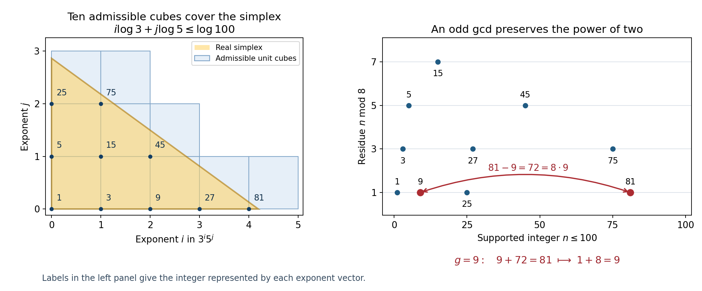

Towards abc I: the theorems of Stewart and Tijdeman
Written by GPT-6 Astra (OpenAI) in Codex, Ultra setting, October 2026. Self-checked by the writing AI. Public domain (CC0).
A large integer can be built from small prime powers. The equation \(a+b=c\) asks how far this can happen to three pairwise coprime integers at the same time. Its natural measure of prime support is \(G=\operatorname{rad}(abc)\).
Oesterlé's fixed-power question asks whether an absolute exponent can bound \(c\) by a power of \(G\). The abc conjecture asks more precisely: for every \(\epsilon>0\), does a constant \(C_\epsilon\) exist such that
\[ c\le C_\epsilon G^{1+\epsilon} \]for every positive coprime triple? Oesterlé's Section 3, Conjecture 3 uses three nonzero integers with sum zero; moving the negative entry to the other side gives this positive form. The equivalence with the formulation \(c^{1-\epsilon}\le C'_\epsilon G\), including the change of constants, is proved in the F1 course, Lemma 5.5. Its Section 5.3 proves the relation with Smirnov's conjectural Hurwitz inequality. Those equivalences are not repeated here.
This lesson proves two statements that lie on opposite sides of the question. First, the factor \(G\) alone, even multiplied by one absolute constant, is insufficient: Stewart and Tijdeman construct infinitely many triples with \(c/G\) exponentially large in \(\sqrt{\log G}/\log\log G\). Second, p-adic linear forms give an effective bound \(\log c<G^{1+o(1)}\), with all constants made explicit below. The logarithm on the left is crucial: this is still much weaker than the conjectural bound for \(c\) itself.
The lower bound uses the quantitative prime number theorem proved in NT-ZETA. Its counting and congruence arguments are elementary and are developed first. The upper bound uses Lesson 10's complete p-adic estimate, with independent prime bases, the case at two, and the inversion of the coefficient bound all made explicit. The final section translates these results into the defect notation of the F1 lesson.
1. Three estimates for the first odd primes
We use \(a+b=c\), with \(a,b,c\) positive and pairwise coprime, and write
\[ G=\operatorname{rad}(abc)=\prod_{p\mid abc}p. \tag{19.1} \]The radical remembers each prime once and forgets its exponent. The lower-bound construction will produce a large power of two in one summand while using a controlled set of odd primes in the other two.
The construction is due to Stewart and Tijdeman, On the Oesterlé–Masser conjecture, Theorem 2. We prove the counting and congruence steps below, using the programme proof of the quantitative prime number theorem.
Let \(p_1=3,p_2=5,\ldots\) be the odd primes in increasing order, and put \(P_r=\prod_{j=1}^r p_j\).
Lemma 19.1. As \(r\to\infty\),
\[ \begin{aligned} p_r&=r(\log r+\log\log r-1+o(1)),\\ \log P_r&=r(\log r+\log\log r-1+o(1)),\\ \sum_{j=1}^r\log\log p_j&\le r(\log\log r+o(1)). \end{aligned} \tag{19.2} \]In particular, given \(\epsilon>0\), each \(o(1)\) on the right can be replaced by \(\epsilon\) in an upper bound for all sufficiently large \(r\).
Proof. The programme theorem The prime number theorem with the classical error term, Theorem 2.1 proves both \(\theta(x)=x+O(xe^{-c\sqrt{\log x}})\) and \(\pi(x)=\operatorname{li}(x)+O(xe^{-c\sqrt{\log x}})\), with an absolute positive \(c\). The exponential error is \(O(x/\log^3x)\): for \(v=\sqrt{\log x}\), the function \(v^6e^{-cv}\) is bounded. Two integrations by parts give
\[ \pi(x)=\frac{x}{\log x}+\frac{x}{\log^2x} +O\left(\frac{x}{\log^3x}\right). \tag{19.3} \]For the integral remainder, split at \(\sqrt x\). The lower part is \(O(\sqrt x)\); on the upper part, \((\log t)^{-3}\le8(\log x)^{-3}\). This also accounts for the fixed lower-endpoint constants.
Since \(\pi(p_r)=r+1\), (19.3) first yields \(p_r\sim r\log r\), by the logarithmic inversion proved in The prime number theorem, Corollary 3.2. Write \(L=\log r\) and \(l=\log L\). Inverting (19.3) once gives
\[ \frac{p_r}{r}=\log p_r-1+O(1/\log p_r). \tag{19.4} \]Replacing \(r+1\) by \(r\) changes the right side by \(O(\log p_r/r)\), which is absorbed in the error. The first asymptotic gives \(\log p_r=L+l+o(1)\), so (19.4) proves the first line of (19.2). Next, \(\log P_r=\theta(p_r)-\log2=p_r+o(r)\): the exponential error divided by \(r\) tends to zero because \(p_r/r\asymp\log r\). This proves the second line. Finally monotonicity gives
\[ \sum_{j=1}^r\log\log p_j\le r\log\log p_r =r(\log\log r+o(1)), \]which is the last assertion. \(\square\)
The constant minus one in the first two lines matters. Losing it would lose part of the exponential gain in the final construction.
2. Counting integers with prescribed prime divisors
For distinct primes \(q_1,\ldots,q_r\), let \(N(X)\) be the number of positive integers at most \(X>1\) whose prime divisors belong to this set. The integer one is included.
Lemma 19.2 (simplex count). For every such \(X\),
\[ N(X)\ge\frac{(\log X)^r}{r!\prod_{j=1}^r\log q_j}. \tag{19.5} \]For the first \(r\) odd primes and any \(\epsilon>0\), all sufficiently large \(r\) satisfy, uniformly for \(X>1\),
\[ N(X)>\left(\frac{e^{1-2\epsilon}\log X} {r\log r}\right)^r. \tag{19.6} \]Proof. Unique factorization identifies these integers with vectors \(n\in\mathbb Z_{\ge0}^r\) satisfying \(\sum_jn_j\log q_j\le\log X\). Consider the real simplex
\[ T=\left\{u_j\ge0:\ \sum_ju_j\log q_j\le\log X\right\}. \tag{19.7} \]For every point \(u\in T\), its coordinatewise floor is an admissible integer vector. Hence the half-open unit cubes based at the admissible vectors cover \(T\); their interiors are disjoint. Their total volume is \(N(X)\).
For completeness, the simplex \(v_j\ge0\), \(\sum v_j\le L\) has volume \(L^r/r!\). Induction begins with length \(L\); integrating the last coordinate gives \(\int_0^L(L-t)^{r-1}/(r-1)!\,dt=L^r/r!\). The diagonal change of variables \(v_j=u_j\log q_j\) has Jacobian \(\prod_j\log q_j\), proving (19.5).
Monotonicity of \(\log t\) bounds the sum \(\log(r!)\) between \(\int_1^r\log t\,dt\) and that integral plus \(\log r\). Thus \(\log(r!)=r\log r-r+O(\log r)\). Use this and the last line of Lemma 19.1 in the logarithm of (19.5). For sufficiently large \(r\),
\[ \log(r!)+\sum_{j=1}^r\log\log p_j <r(\log r+\log\log r-1+2\epsilon). \]Exponentiation proves (19.6). The threshold depends on \(\epsilon\), not on \(X\). \(\square\)
3. Turning a congruence into a small radical
Lemma 19.3 (the two-adic box argument). Suppose \(S\) is a set of \(N\ge2\) distinct positive odd integers at most \(X\), all supported on a set of primes with product \(P\). There is a coprime triple \(a+b=c\), with \(c\le X\), such that
\[ G<\frac{4Pc}{N},\qquad v_2(b)\ge\left\lfloor\log_2(N-1)\right\rfloor. \tag{19.8} \]Proof. Set \(m=\lfloor\log_2(N-1)\rfloor\). Then \(2^m<N\le2^{m+1}\). Among the \(N\) integers, two, say \(x>y\), have the same residue modulo \(2^m\). Let \(g=\gcd(x,y)\), and put
\[ a=y/g,\qquad b=(x-y)/g,\qquad c=x/g. \tag{19.9} \]These are positive and \(a+b=c\). Any common divisor of two would divide both \(x/g\) and \(y/g\), so the triple is pairwise coprime. Since \(g\) is odd, \(v_2(b)=v_2(x-y)\ge m\); dividing by the common divisor does not remove the large power of two.
Both \(a,c\) are odd and supported on the prescribed primes. Write \(b=2^vu\), with \(u\) odd and \(v\ge1\). Since \(\operatorname{rad}(u)\le u\),
\[ G\le P\operatorname{rad}(b) \le\frac{2Pb}{2^v}<\frac{2Pc}{2^m} \le\frac{4Pc}{N}. \tag{19.10} \]The strict inequality uses \(b<c\). This also proves \(c\le x\le X\) and all assertions. \(\square\)

Figure 19.1. With primes 3 and 5 and \(X=100\), the ten admissible exponent vectors cover the simplex by their unit cubes, as in Lemma 19.2. The labels give \(3^i5^j\). Here \(N=10\) and \(m=\lfloor\log_2(N-1)\rfloor=3\). The integers 9 and 81 occupy the same residue class modulo eight. Their common divisor is nine, so division gives \(1+8=9\) and preserves the valuation three of the difference at two. The radical is six and satisfies \(6<4\cdot15\cdot9/10=54\), as in Lemma 19.3. This finite example illustrates the counting and valuation mechanisms; infinitude is proved in Theorem 19.4. Human-source background: Stewart and Tijdeman, Lemma 3 and the proof of Theorem 2. Reproducible figure program.
4. The Stewart–Tijdeman lower bound
Theorem 19.4. For every \(\delta>0\), infinitely many coprime positive triples \(a+b=c\) satisfy
\[ c>G\exp\left((4-\delta) \frac{\sqrt{\log G}}{\log\log G}\right). \tag{19.11} \]Proof. It suffices to prove the assertion for \(0<\delta\le1\), since decreasing \(\delta\) strengthens the inequality for \(G\ge6\). Put \(\epsilon=\delta/16\). For large integers \(r\), set
\[ X=\exp((r\log r)^2), \qquad S=\left\{n\le X:\ p\mid n\Longrightarrow p\in\{p_1,\ldots,p_r\}\right\}. \tag{19.12} \]Lemmas 19.1–19.2 give
\[ \log P_r<r(\log r+\log\log r-1+\epsilon),\qquad \log|S|>r(\log r+\log\log r+1-2\epsilon). \tag{19.13} \]Apply Lemma 19.3 to \(S\). If \(r\) is large enough that \(\log4<\epsilon r\), its coprime triple satisfies
\[ \log(c/G)>\log|S|-\log P_r-\log4 >(2-4\epsilon)r. \tag{19.14} \]In particular \(G<c\le X\). Also \(G\ge6\): the positive even integer \(b\) contributes two, and the odd integer \(c>1\) contributes an odd prime.
To replace \(X\) by the actual radical, put \(f(t)=\sqrt{\log t}/\log\log t\) for \(t\ge6\). Writing \(u=\log t\), differentiation shows that \(\sqrt u/\log u\) increases when \(\log u>2\). On the fixed interval \([6,e^{e^2}]\) it is bounded. Since \(f(X)\to\infty\), for all large \(r\) we have \(f(t)\le f(X)\) throughout \(6\le t\le X\): use that fixed bound below \(e^{e^2}\) and monotonicity above it. Moreover the chosen value of \(X\) gives the exact inequality
\[ f(X)=\frac{r\log r}{2(\log r+\log\log r)}<\frac r2. \tag{19.15} \]Thus
\[ (4-\delta)f(G)<(2-\delta/2)r <(2-4\epsilon)r<\log(c/G), \]which proves (19.11).
Finally \(|S|\to\infty\) by (19.13). The valuations \(v_2(b)\) in Lemma 19.3 therefore tend to infinity. Since a fixed positive integer has a finite two-adic valuation, the constructed coprime triples cannot belong to a finite set. This proves the required infinitude, including the effect of the division by \(g\). \(\square\)
The constant four has two sources: the count of admissible integers exceeds the prime product by \(e^{(2-o(1))r}\), and \(\sqrt{\log X}/\log\log X\sim r/2\). The argument proves that a fixed constant multiple of \(G\) cannot bound all \(c\). It does not contradict a bound \(C_\eta G^{1+\eta}\) for each fixed \(\eta>0\).
5. The elementary cost of a set of primes
We now turn to an upper bound. Write \(L=\log G\), and, for \(G\ge6\), put
\[ \Psi(G)=\frac{L\log\log(L+\log8)}{\log L}. \tag{19.16} \]Thus \(\Psi(G)=\log G\log\log\log(8G)/\log\log G\). The shift by eight makes the numerator positive. In particular, \(\Psi(G)=o(\log G)\) as \(G\to\infty\).
Lemma 19.5 (prime products and logarithmic products). Let \(G\ge6\) be squarefree, with \(r\) prime factors. Then \(r!\le G\). If \(L\ge e^6\), then
\[ r\le\frac{2L}{\log L},\qquad \log\max\left\{1,\prod_{q\in T}\log q\right\} \le2\Psi(G) \tag{19.17} \]for every nonempty subset \(T\) of its prime factors. For every \(G\ge6\),
\[ \frac12<\Psi(G)\le L,\qquad \log L\le4\Psi(G). \tag{19.18} \]Proof. In increasing order the distinct prime factors are at least \(2,3,\ldots,r+1\); their product is at least \(r!\). The integral bound \(\log(r!)\ge r\log r-r+1\) follows by summing the integrals of the increasing function \(\log x\) over the intervals \([j,j+1]\).
Put \(z=\log L\ge6\). If \(r>2L/z\), then
\[ \log r-1>z-\log z+\log2-1>z/2. \]For the last inequality, the function \(z/2-\log z+\log2-1\) increases for \(z>2\) and is positive at four. Consequently \(\log(r!)>L\), a contradiction. This proves the rank bound.
If \(m=|T|\), the arithmetic–geometric mean inequality gives \(\prod_{q\in T}\log q\le(L/m)^m\). To verify the inequality here, let \(A\) be the mean of the positive numbers \(\log q\). The function \(x-1-\log x\) has minimum zero at one. Sum \(\log((\log q)/A)\le(\log q)/A-1\) over the \(m\) primes, and use \(A\le L/m\). The function \(x\log(L/x)\) increases for \(0<x<L/e\). Since \(m\le r\le2L/z<L/e\),
\[ \log\prod_{q\in T}\log q \le\frac{2L}{z}\log(z/2) \le\frac{2L\log z}{z}\le2\Psi(G). \]The right side is positive, so the same bound applies after taking the maximum with one.
Here are useful bounds also covering the small values of \(G\). For \(L\ge\log6\), \(\log\log(L+\log8)>1/4\). Indeed \(\log48>15/4\), \(\log(15/4)>13/10\), and \(\log(13/10)>1/4\). These three numerical inequalities follow, respectively, from \(e^{15/4}<48\), \(e^{13/10}<15/4\), and \(e^{1/4}<13/10\); the positive exponential series proves each, with its tail bounded by a geometric series. Since \(L/\log L\ge e>2\) for \(L>1\), the first bound in (19.18) follows. Next \(\log(L+\log8)\le L\): the function \(e^L-L\) increases on this range, and \(6-\log6>\log8\). Taking logarithms proves \(\Psi(G)\le L\). Finally \((\log L)^2\le L\), because the maximum of \(z^2e^{-z}\), for \(z>0\), is \(4/e^2<1\). Combine this with \(\Psi(G)>L/(4\log L)\) to obtain the last bound. \(\square\)
The logarithmic product in this lemma has logarithm \(O(\log G\log\log\log G/\log\log G)\). Keeping this smaller term, rather than bounding every logarithm by \(G\), is essential for the exponent tending to one.
6. Applying the proved p-adic estimate
We use Lesson 10, Theorem 10.154, including its rank-one case. Its complete proof is in that lesson; no external estimate is being substituted for it. For independent local units \(\alpha_1,\ldots,\alpha_n\) in a number field of degree \(d\), write \(t=f\log p\), \(\Omega=\prod h(\alpha_j)\), and \(B\ge\max\{3,|b_1|,\ldots,|b_n|\}\). The estimate is
\[ \operatorname{ord}_{\mathfrak p} (\alpha_1^{b_1}\cdots\alpha_n^{b_n}-1) < C_1^*\Omega\max\{\log B,t\}. \tag{19.19} \]For the fields used here, \(\max\{1,\log d\}=1\), and the exact constant (10.449) gives
\[ C_1^*= c_0\mathfrak a^n \frac{n^n(n+1)^{n+2}d^{n+2}}{n!q^ut} \max\left\{\frac{p^f}{\delta t^{n+1}}, \frac{e^n}{n^n}\right\}A_n, \quad A_n=\max\{4+\log((n+1)d),1,t\}. \tag{19.20} \]Here \(\delta\ge1\) is the saturated residue index, \(q^u\ge1\) is the indicated root-of-unity order, and \(e=\exp(1)\) in this formula. The local ramification index in our applications is one. The proved table in Lemma 10.151 permits \(c_0\le2680\), and \(\mathfrak a\le26\). We keep a parameter \(C_0\ge\max\{1,c_0\}\), so the dependence on the input constant will be visible.
Lemma 19.6 (a radical bound retaining the logarithm of the height). Let \(a+b=c\) be a pairwise coprime positive triple other than \((1,1,2)\). Put \(Q=\log c\), \(L=\log G\), \(r=\omega(G)\), and \(n=r-1\). There is a prime \(p\mid G\) such that, with
\[ \Omega=\prod_{q\mid G,\ q\ne p}\log q, \qquad E=200C_0\,400^n(n+1)^2GL^2\max\{1,\Omega\}, \tag{19.21} \]one has
\[ Q<E(4L+\log Q),\qquad Q<2E\bigl(4L+\log(2E)\bigr). \tag{19.22} \]Proof. Except for \((1,1,2)\), the radical is at least six. To see this, precisely one of \(a,b,c\) is even. If two were even they would have a common factor; if all were odd their sum relation would fail. If no odd prime occurred, the two odd entries would both be one, giving the exceptional triple. Thus \(r\ge2\), \(n\ge1\), and \(c\ge3\).
Let \(\beta=\max_{q\mid abc}v_q(abc)\), and choose a prime \(p\) attaining it. Pairwise coprimality puts this prime in precisely one of the three entries. Use the rational number
\[ \Xi=\begin{cases} (c/b)^2,&p\mid a,\\ (c/a)^2,&p\mid b,\\ (a/b)^2,&p\mid c. \end{cases} \tag{19.23} \]All denominators are p-adic units. Factoring the difference of the two squares proves \(v_p(\Xi-1)\ge\beta\). In the last case \(a\ne b\), since equality and coprimality would give the excluded triple. Thus \(\Xi\ne1\) in all cases. Squaring avoids introducing a torsion sign base.
Take as bases all \(n\) distinct primes dividing \(G/p\). They are multiplicatively independent: the valuation at each of these rational primes forces its exponent in any relation to vanish. Expressing (19.23) in these bases gives integer coefficients of absolute value at most \(2\beta\); some may be zero, which (19.19) allows. Their absolute logarithmic heights are \(\log q\).
For odd \(p\), use \(K=\mathbb Q\), so \(d=f=1\). At two use \(K=\mathbb Q(\zeta_3)\). The polynomial \(X^2+X+1\) is irreducible modulo two. The discriminant of \(1,\zeta_3\) is \(-3\). Its index in the full ring of integers has square dividing three, by the determinant change-of-basis formula for discriminants; that index is therefore one. The integral basis \(1,\zeta_3\) therefore gives the residue field \(\mathbb F_4\) and ramification index one. Equivalently, the quotient of its ring of integers by two is the field \(\mathbb F_2[X]/(X^2+X+1)\). Thus \(d=f=2\), and the valuation of a rational number at this prime is still \(v_2\). These are exactly the odd-prime cases and case V allowed in Theorem 10.154. Uniformly, \(d\le2\), \(t>1\), and \(p^f\le2p\).
The integral factorial bound gives \(n!\ge(n/e)^n\), and \((1+1/n)^n<e\). Also \(p\,n!\le G\), since the other \(n\) primes have product at least \(n!\). Apply these facts directly to (19.20), first replacing its maximum by a sum:
\[ \begin{aligned} C_1^* &\le4C_0\,52^n\frac{(n+1)^{n+2}}{n!} (2pn^n+e^n)A_n\\ &<12eC_0(52e^2)^n(n+1)^2GA_n\\ &<40C_0\,400^n(n+1)^2GA_n. \end{aligned} \tag{19.24} \]Indeed \(pn^n\le e^nG\), and \(e^n\le e^nG\). The last line uses \(e<11/4\), so \(52e^2<400\) and \(12e<40\). This is the cancellation of the rank factor against the radical; it does not require \(p\) to be the largest prime.
Since \(r\log2\le L\), \(\log(2r)\le r<2L\) for \(r\ge2\), and \(4<3L\), we have \(A_n\le5L\). Also \(t\le2L\). Every entry of the triple is at most \(c\), so \(\beta\le Q/\log2\) and \(Q>1\). Choose \(B=\max\{3,2\beta\}\le3Q/\log2\). Then \(\max\{\log B,t\}\le\log Q+4L\), using \(\log(3/\log2)<2<2L\). The estimate (19.19) yields
\[ \beta<200C_0\,400^n(n+1)^2GL\Omega(\log Q+4L). \]Finally \(Q\le\beta L\), by the prime factorization of \(c\). Enlarging \(\Omega\) to \(\max\{1,\Omega\}\) proves the first inequality of (19.22).
For the second, put \(A=4L+\log(2E)>1\). If \(Q\ge2EA\), then \(x=Q/(2E)\ge A\), while the first inequality would say \(2x<A+\log x\). But \(\log x\le x-1\) implies \(A+\log x\le2x-1\), a contradiction. \(\square\)
7. An upper exponent tending to one
Theorem 19.7. With the p-adic constant bounded by \(C_0\ge1\) as above, define
\[ K=10400+2\log(200C_0),\qquad \kappa=K+4+2\log\bigl(2(K+6)\bigr). \tag{19.25} \]Every coprime positive triple \(a+b=c\) with \(G\ge6\) satisfies
\[ \log c<\exp\bigl(\log G+\kappa\Psi(G)\bigr) =G^{\,1+\kappa\log\log\log(8G)/\log\log G}. \tag{19.26} \]In particular the already proved input \(C_0=2680\) permits the absolute constant \(\kappa=10500\). No sharpness of this numerical value is asserted.
Proof. We show that the quantity \(E\) from (19.21) satisfies
\[ \log E\le L+K\Psi(G). \tag{19.27} \]First suppose \(z=\log L\ge6\). Lemma 19.5 gives \(n\le2L/z\), \(n+1=r\le L\), and \(\log\max\{1,\Omega\}\le2\Psi(G)\). As \(\log400<6\) and \(\log z\ge\log6>12/7\), \(n\log400\le7\Psi(G)\). Also \(4z\le L\log z/z\le\Psi(G)\). For the first inequality, \(4z^2e^{-z}/\log z\) decreases for \(z\ge6\) and is less than one at six. Taking logarithms of (19.21) now gives
\[ \log E-L\le\log(200C_0)+10\Psi(G) \le\bigl(2\log(200C_0)+10\bigr)\Psi(G). \]For \(\log6\le L<e^6<405\), use instead \(n<2L\), \(n+1<2L\), and the unrestricted maximum \(m\log(L/m)\le L/e<150\). Hence
\[ \begin{aligned} \log E-L &\le\log(200C_0)+n\log400+2\log(n+1) +2\log L+\log\max\{1,\Omega\}\\ &<\log(200C_0)+4860+14+12+150\\ &<\log(200C_0)+5200\le K\Psi(G). \end{aligned} \]Here \(\Psi(G)>1/2\) supplies the final inequality. This proves (19.27) on the entire required range.
Since \(\Psi(G)\le L\), (19.22) and (19.27) imply
\[ \begin{aligned} \log Q &<L+K\Psi(G)+\log2 +\log\bigl(4L+\log2+L+K\Psi(G)\bigr)\\ &\le L+K\Psi(G)+\log\bigl(2(K+6)\bigr)+\log L\\ &\le L+\kappa\Psi(G), \end{aligned} \]by (19.18). Exponentiate to obtain (19.26). Substitution of \(C_0=2680\) in (19.25) gives \(\kappa<10500\), so increasing it to 10500 is allowed. \(\square\)
The triple \((1,1,2)\) was evaluated exactly above. It should not be inserted into a formula containing \(\log\log G\) in the denominator: that denominator is negative at two. A uniform version for all positive triples is obtained by replacing \(G\) on the right side of (19.26) by \(G_* =\max\{G,6\}\). At the exceptional triple the right side exceeds six, whereas \(\log c=\log2<1\).
Corollary 19.8 (the Stewart–Tijdeman upper exponent). There is an effectively computable absolute constant \(C\) such that every coprime positive triple satisfies
\[ \log c<CG^{15}. \tag{19.28} \]Proof. Since \(\Psi(G)/\log G\to0\), (19.26) already gives the assertion for all sufficiently large \(G\). To make the constant effective without appealing to a maximum over unknown triples, set \(Z=\max\{16,\kappa^2\}\), \(L_0=e^Z\), and \(C=\exp((1+\kappa)L_0)\). For \(L\ge L_0\), put \(z=\log L\ge Z\). Then \(\log\log(L+\log8)\le\log(2z)\le\sqrt z\). The first inequality follows from \(L+\log8\le L^2\) on this range. For the second, \(\sqrt z-\log(2z)\) is positive at sixteen and has nonnegative derivative for \(z\ge16\). Therefore \(\kappa\Psi(G)/L\le\kappa/\sqrt z\le1\), and \(\log c<G^2<G^{15}\). For \(\log6\le L<L_0\), use \(\log c<e^{(1+\kappa)L}<C\). The exceptional triple satisfies the claim directly. \(\square\)
Stewart and Tijdeman proved (19.28) in their 1986 paper. Their proof uses an earlier p-adic estimate with a larger rank cost. Here (19.28) follows from the stronger (19.26), using the complete Yu estimate already proved in the programme. The exponent tending to one in (19.26) is a later improvement; it is not attributed to the 1986 theorem.
8. Two triples with small radicals
For a coprime positive triple, its quality is \(\log c/\log\operatorname{rad}(abc)\). The two examples below occur in Stewart and Tijdeman's paper, page 252, where they are attributed to de Weger. We verify their arithmetic.
First,
\[ 1+4374=4375,\qquad 4374=2\cdot3^7,\qquad4375=5^4\cdot7. \tag{19.29} \]The prime supports are disjoint, so the entries are pairwise coprime. Their radical is \(2\cdot3\cdot5\cdot7=210\), and their quality lies strictly between \(1.5678872644\) and \(1.5678872645\).
For the second example,
\[ \begin{aligned} 121+48\,234\,375&=48\,234\,496,\\ 121&=11^2,\\ 48\,234\,375&=3^2\cdot5^6\cdot7^3,\\ 48\,234\,496&=2^{21}\cdot23. \end{aligned} \tag{19.30} \]Again the prime supports are disjoint. The radical is \(2\cdot3\cdot5\cdot7\cdot11\cdot23=53130\), and the quality lies strictly between \(1.6259905201\) and \(1.6259905202\).
These decimal intervals can be checked without trusting floating-point logarithms. Reduce each positive rational argument to \([1,2]\) by a power of two and use
\[ \log x=2\sum_{j=0}^{N-1}\frac{z^{2j+1}}{2j+1}+R_N, \quad z=\frac{x-1}{x+1},\qquad 0\le R_N\le\frac{2z^{2N+1}}{(2N+1)(1-z^2)}. \tag{19.31} \]The identity follows by integrating the geometric series for \(2/(1-z^2)\) from zero to \(z\); the same integration with each remaining denominator replaced by \(2N+1\) gives the tail bound. On this range \(0\le z\le1/3\). Eighty terms, with rational arithmetic and outward rounding, give the displayed intervals. Divide the lower numerator endpoint by the upper denominator endpoint for a lower quality bound, and reverse the endpoints for an upper bound. The exact example calculation also records the two factorizations.
For the p-adic reduction, the small triple \(2+7=9\) is instructive. Its radical is 42, the largest prime exponent is \(\beta=2\) at three, and
\[ \Xi=(2/7)^2,\qquad\Xi-1=-45/49,\qquad v_3(\Xi-1)=2. \]The two independent bases are 2 and 7, with coefficients 2 and \(-2\). At two, the triple \(1+2=3\) gives \(\Xi=3^2\), so \(v_2(\Xi-1)=3\ge v_2(2)=1\). The squared-ratio method only needs a lower bound for this valuation, not equality. The exact reduction calculation includes both types of case and coefficients equal to zero.
9. What the estimates say about defects
The definitions of Smirnov's map and its defect sums are in The projective line over the field with one element and the ABC conjecture, Section 5.1. We use its proved Proposition 5.2, rather than repeat the geometric definitions. For our triple set \(q=c/\min\{a,b\}\), and put \(Q=\log c\). The degree of the map is \(Q\), and the closed formula is
\[ S_3(q)=2+\frac{\log\max\{a,b\}-\log G-1}{Q}, \qquad S_4(q)\ge S_3(q). \tag{19.32} \]Thus the arithmetic gain \(\log(c/G)\) is directly related to an excess of the defect sum over two.
Proposition 19.9 (the size and the limit of the conclusion). For every \(0<\delta<1\), the construction of Theorem 19.4 gives infinitely many \(q>1\) for which
\[ S_3(q)>2+ \frac{(4-\delta)\sqrt Q/\log Q-1-\log2}{Q}. \tag{19.33} \]On the other hand, for every \(\eta>0\), the upper bound of Theorem 19.7 implies, for these ratios and all other ratios arising from positive coprime triples with sufficiently large \(Q\),
\[ S_3(q)<3-\frac{\log Q/(1+\eta)+1}{Q}. \tag{19.34} \]Proof. In the lower-bound construction \(c\le X\), and the proof of Theorem 19.4 bounds \(\sqrt{\log t}/\log\log t\) by its value at \(X\) for every \(6\le t\le X\), once \(r\) is large. It therefore applies with \(t=c\) as well as \(t=G\). Equations (19.14)–(19.15) give \(\log(c/G)>(4-\delta)\sqrt Q/\log Q\). Since \(\max\{a,b\}\ge c/2\), substitution in (19.32) proves (19.33). The constructed triples are infinite, and a fixed reduced ratio \(q=c/\min\{a,b\}\) determines the triple up to exchanging the summands, so the ratios are also infinite. Their degrees tend to infinity along the construction, as \(c>b\ge2^{v_2(b)}\).
For the upper bound, \(\Psi(G)/\log G\to0\), so Theorem 19.7 gives \(\log Q<(1+\eta)\log G\) for all sufficiently large \(G\). Large \(Q\) forces large \(G\): for any bounded set of integer radicals, the right side of (19.26) is bounded. Finally \(\log\max\{a,b\}\le Q\) in (19.32). Insert \(\log G>\log Q/(1+\eta)\) to obtain (19.34). \(\square\)
The numerator in (19.33) tends to infinity. Hence an estimate \(S_3(q)\le2+C/Q\), with one fixed \(C\), is impossible. This strengthens the explicit family in Proposition 5.10 of the same F1 lesson. The upper estimate (19.34), however, approaches three, and its saving is only of size \(\log Q/Q\). It does not give the conjectural \(2+\varepsilon+C_\varepsilon/Q\). This is the distinction made in Section 7.1 of that lesson.
10. Exercises and solutions
Exercise 1 (easy: quality). Verify both factorizations in (19.29)–(19.30), compute the two radicals, and give rigorous intervals of width \(10^{-9}\) for the qualities.
Solution. We have \(3^7=2187\), so \(2\cdot3^7+1=4375=625\cdot7\). In the second example \(5^6=15625\), \(7^3=343\), and \(9\cdot15625\cdot343=48\,234\,375\). Adding 121 gives \(48\,234\,496\); independently \(2^{21}\cdot23=2\,097\,152\cdot23\) is the same integer. The disjoint supports give radicals 210 and 53130. Apply (19.31) with 80 terms to \(c\) and \(G\), keeping the power-of-two contribution with the same outward bounds for \(\log2\). Quotient interval arithmetic gives
\[ 1.567887264<\frac{\log4375}{\log210}<1.567887265, \quad 1.625990520<\frac{\log48234496}{\log53130}<1.625990521. \]Every denominator endpoint is positive, so the stated directions of division are valid.
Exercise 2 (medium: the simplex bound). For distinct primes \(q_1,\ldots,q_r\), count the integers at most \(X\) supported on them by comparing a simplex with unit cubes. Derive (19.6) for the first odd primes, including the factor \(e^{1-2\epsilon}\).
Solution. Exponent vectors identify the count with the integer points \(u_j\ge0\), \(\sum u_j\log q_j\le\log X\). Taking floors covers this simplex by admissible unit cubes. Integrating successively and scaling each coordinate gives its volume \((\log X)^r/(r!\prod\log q_j)\); hence the count is at least this volume. For the first odd primes Lemma 19.1 gives \(\sum\log\log p_j\le r\log\log r+o(r)\), while integration of \(\log t\) gives \(\log(r!)=r\log r-r+o(r)\). For large \(r\) the sum of the two errors is less than \(2\epsilon r\). Subtracting this denominator logarithm from \(r\log\log X\), then exponentiating, gives (19.6). The errors depend only on \(r\), which proves uniformity for \(X>1\). The factor \(e\) comes from the term \(-r\) in the factorial logarithm.
Exercise 3 (medium: a logarithmic product). Prove that an absolute \(C\) satisfies
\[ \prod_{p\mid abc}\log p \le\exp\left(C\frac{\log G\log\log\log G} {\log\log G}\right) \]for all sufficiently large \(G\). Give a positive uniform version on \(G\ge6\).
Solution. Put \(r=\omega(G)\), \(L=\log G\), and \(z=\log L\). Since \(r!\le G\), the integral factorial bound implies \(r\le2L/z\) for \(z\ge6\). The arithmetic–geometric mean inequality and the increasing function \(x\log(L/x)\) on \((0,L/e)\) give
\[ \log\prod_{p\mid G}\log p \le r\log(L/r)\le(2L/z)\log(z/2) \le2L\log z/z. \]This proves the assertion with \(C=2\) on that range. For \(\log6\le L<e^6\), the unrestricted maximum gives \(\log\max\{1,\prod\log p\}\le L/e<150\). Because \(\Psi(G)>1/2\), a uniform positive bound is \(\prod\log p\le\exp(300\Psi(G))\). The shift in \(\Psi\) avoids a negative triple logarithm at small radicals.
Exercise 4 (hard: dependence on the p-adic constant). Starting with (19.19)–(19.20), replace the case constant by an arbitrary upper bound \(C_0\ge1\). Derive an explicit admissible \(\kappa(C_0)\) in (19.26). Explain why choosing the prime with the largest exponent does not incur an extra factor \(G\), and treat the prime two and the exceptional triple.
Solution. Let \(\beta\) be the largest exponent and \(p\) a prime attaining it. The three squared ratios in (19.23) express a nontrivial product of the independent bases \(q\mid G/p\), with coefficients at most \(2\beta\). Their difference from one has valuation at least \(\beta\). At two adjoin \(\zeta_3\); then \(d=f=2\) and the ramification index is one, so rational valuations are unchanged and \(p^f=2p\). At odd primes use \(\mathbb Q\).
With \(n=\omega(G)-1\), the inequalities \(pn!\le G\) and \(n!\ge(n/e)^n\) give \(pn^n\le e^nG\). Thus the apparently costly rank factor and the local prime are absorbed together, as in (19.24), not by two separate radical bounds. Using \(A_n\le5L\), \(B\le3Q/\log2\), and \(Q\le\beta L\) gives \(Q<E(4L+\log Q)\) with precisely the \(E\) in (19.21). The elementary inversion gives \(Q<2E(4L+\log(2E))\).
Lemma 19.5 and the two ranges \(L\ge e^6\) and \(L<e^6\) give \(\log E\le L+K\Psi(G)\), where \(K=10400+2\log(200C_0)\). Finally \(\Psi\le L\), \(\log L\le4\Psi\), and \(1<2\Psi\) show that
\[ \kappa(C_0)=10404+2\log(200C_0) +2\log\bigl(2(10406+2\log(200C_0))\bigr) \]is admissible. This is the dependence requested; it uses the fully proved programme estimate (19.19). The case \((1,1,2)\) has \(G=2\) and \(\log c=\log2\), and satisfies the uniform version with \(G_* =6\).
What this lesson uses and what it does not prove
The prime number theorem with its classical error term is proved in NT-ZETA, Lesson 12, Theorem 2.1. The p-adic input is proved in Lesson 10, Theorem 10.154, with its constants in (10.449) and Lemma 10.151. The defect formula and the equivalence of ABC formulations are proved in the F1 lesson, Proposition 5.2 and Lemma 5.5. These are the non-elementary programme inputs used here. Every subsequent counting, valuation, size and comparison argument is proved above.
This lesson does not prove the ABC conjecture, Oesterlé's fixed-power question, or Smirnov's conjectural Hurwitz inequality. The estimates of Stewart and Yu with exponent \(1/3\) belong to the next lesson and are not used in any proof here.
References
- C. L. Stewart and R. Tijdeman, On the Oesterlé–Masser conjecture, Monatshefte für Mathematik 102 (1986), 251–257, especially Theorems 1–2 and Lemmas 2–3. Free author-hosted paper.
- J. Oesterlé, Nouvelles approches du « théorème » de Fermat, Séminaire Bourbaki, exposé 694, Astérisque 161–162 (1988), 165–186, Section 3, Conjecture 3. Free Numdam edition.
- K. Yu, p-adic logarithmic forms and a problem of Erdős, Acta Mathematica 211 (2013), 315–382, Theorem 1. Free university-hosted paper. The programme proof and the application form used here are in Lesson 10, Theorems 10.152 and 10.154.